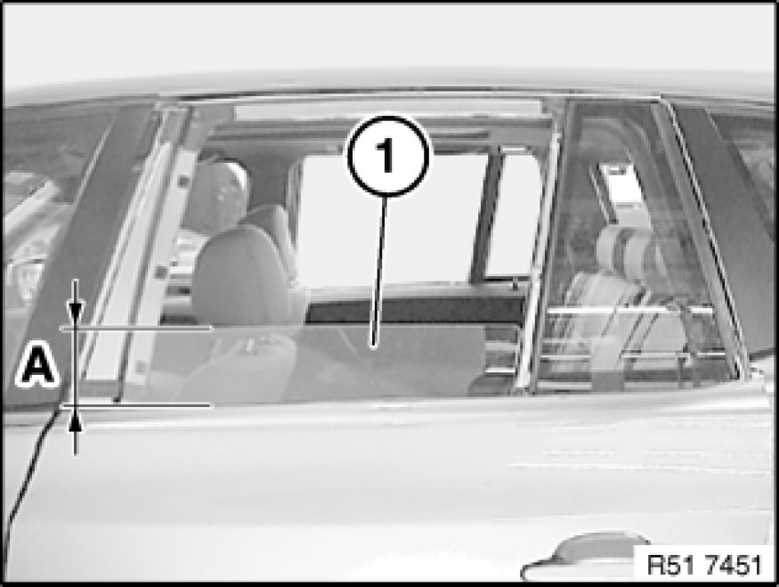
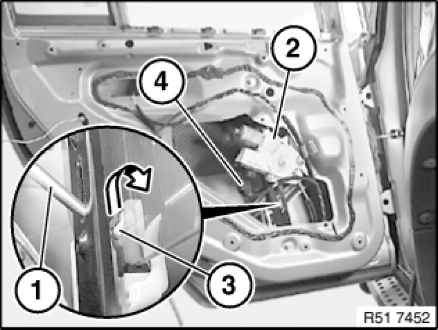
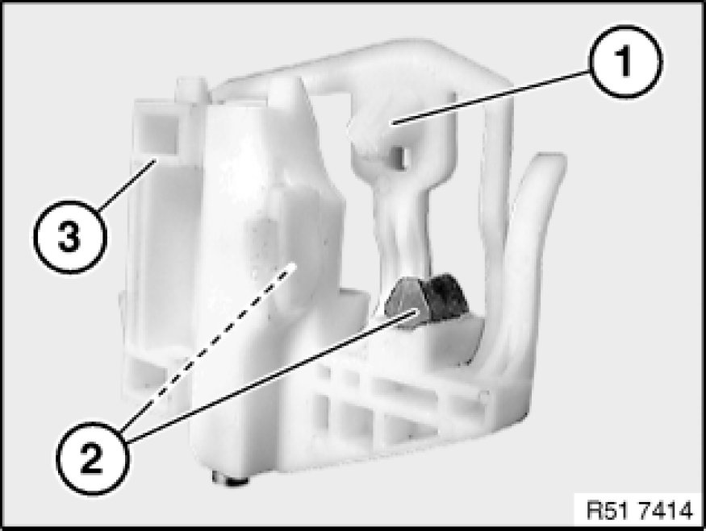
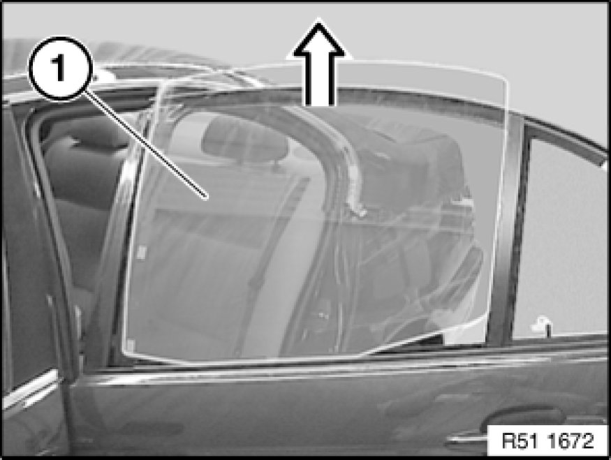

Replacing Rear Left or Right Door Window
51 34 171 - Replacing rear left or right door window

Necessary preliminary tasks:
- Open door window to 105 mm.
- Remove sound insulation in rear door Removing and Installing/Replacing Sound Insulation on Left or Right Rear Door
- Remove outer window cavity cover strip
- Remove cover on door window frame 51 34 160 Removing and Installing/Replacing Housing Cover on Inner Left or Right Door Window Frame
- Remove trim on rear door window frame
- Remove rubber guide for rear door window glass 51 34 211 Replacing Rubber Guide For Rear Left or Right Door Window

Open door window glass (1) down to distance (A)
A - = approx. 105 mm

Important!
Disconnect plug connection (1) from power window motor (2) (risk of trapping).
Lever out catches (3) with screwdriver (4) in direction of arrow.
Installation:
Catch (3) must be correctly clipped into place.

Installation:
Following parts of window guide (3) must not be damaged or missing:
1 - Catch
2 - Buffer stop

Remove door window glass (1) towards top.
Installation:
Door window glass does not need to be adjusted.